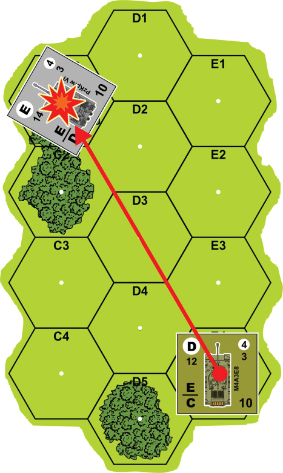

18. Anti-Tank (AT) Combat¶
18.1 Anti-Tank (AT) Fire¶
AT fire may target AFVs, vehicles or Guns. AT fire has no effect on infantry units. The firing unit must be able to make an AT attack (i.e. the unit must have an ATFP rating), or if the attacking unit is infantry it must be using a support weapon with an ATFP rating. AT fire affects a single target unit. Infantry being transported by an AFV or vehicle may not conduct AT attacks.
18.2 Range¶
Infantry units using an AT support weapon may fire at a target within the range printed on the support weapon's counter. A Gun, including an AFVs Gun, may fire its ATFP rating at unlimited range, as long as it has LOS to the target.
18.3 Procedure¶
The attacking player declares which unit is conducting the AT attack, and the target unit of the attack, checks the range to the target, then consults the Anti-Tank To-Hit Numbers chart to determine the initial, unmodified to-hit number. Once the to-hit number is determined the attacking player makes a to-hit dice roll, modified by cover if applicable. If the roll is equal to or less than the to-hit number, the attacking unit successfully hits the target.
18.4 Results¶
| Elimination roll | Result |
|---|---|
| < Elimination Number | Eliminates AFV (removed) |
| = Elimination Number | Immobilizes AFV (marked) |
| > Elimination Number | No effect |
An unarmored vehicle or Gun hit by an AT attack is automatically eliminated. If an AFV is hit, the attacking player cross-references the attacking unit's ATFP rating with the target unit's Armor Factor on the Armor Elimination Chart to obtain an Elimination Number. A dice roll equal to the Elimination Number immobilizes the AFV, and it is marked with an Immobile marker. A dice roll less than the Elimination Number eliminates the AFV. Cover modifiers are not applied to the elimination roll. If the attacker rolls higher than the Elimination Number there is no effect. Eliminated units are removed from play.
18.5 Determining the Armor Factor¶
The Armor Factor used to determine the Elimination Number depends on the facing of the target unit in relation to the firing unit. Consult the Armor Facing diagram to determine which Armor Factor is used. Facing is irrelevant
| Die roll | Result |
|---|---|
| 1-3 | Front armor |
| 4-6 | Rear armor |
if the unit only has one Armor Factor, and that Armor Factor is used to determine the Elimination Number. If the attacking unit's LOS travels directly along the hexside between the Front and Rear armor of the target unit, the attacking player rolls a die. On a result of 1-3 the target unit's Front armor is used to resolve the attack, and on a result of 4-6 the unit's Rear armor is used.
18.6 Immobilization¶
An immobilized AFV is marked with an Immobile marker, and the owning player immediately checks to see if the crew abandons the AFV. A die roll of 2 or less indicates the crew has abandoned the vehicle, and the unit is considered eliminated and removed from play. Whenever an immobilized AFV is attacked - by any type of attack - and the unit survives, the player must check to see if the crew abandons the AFV. An immobilized AFV may not move or change facing, but may still fire normally.
18.7 Smoke Rounds¶
A Gun (or an AFV armed with a Gun) may fire a smoke round in lieu of a normal AT attack. The unit must have LOS to the target hex. The Gun automatically places a Smoke 2 marker in the target hex; no dice roll is necessary. The unit is marked with a Fire marker, and two smoke factors are deducted from the player's smoke supply.
Anti-Tank Combat Example¶

The M4A3E8 in hex E4 is firing on the Tiger I in hex C1 using its ATFP rating of D. The target unit is within 10 hexes, so the M4A3E8 needs to roll a 10 or less to hit. The woods in hex C1 modify the to-hit dice roll by +2. The player rolls his dice, and the result is a 7, +2 for the woods, for a total of 9 - the M4A3E8 hits the Tiger! The M4A3E8's ATFP rating of D is cross-referenced with the Tiger's rear Armor rating of D on the Armor Elimination Chart, yielding an Elimination Number of 7. The attacking player rolls a 6, less than the Elimination Number, destroying the Tiger!